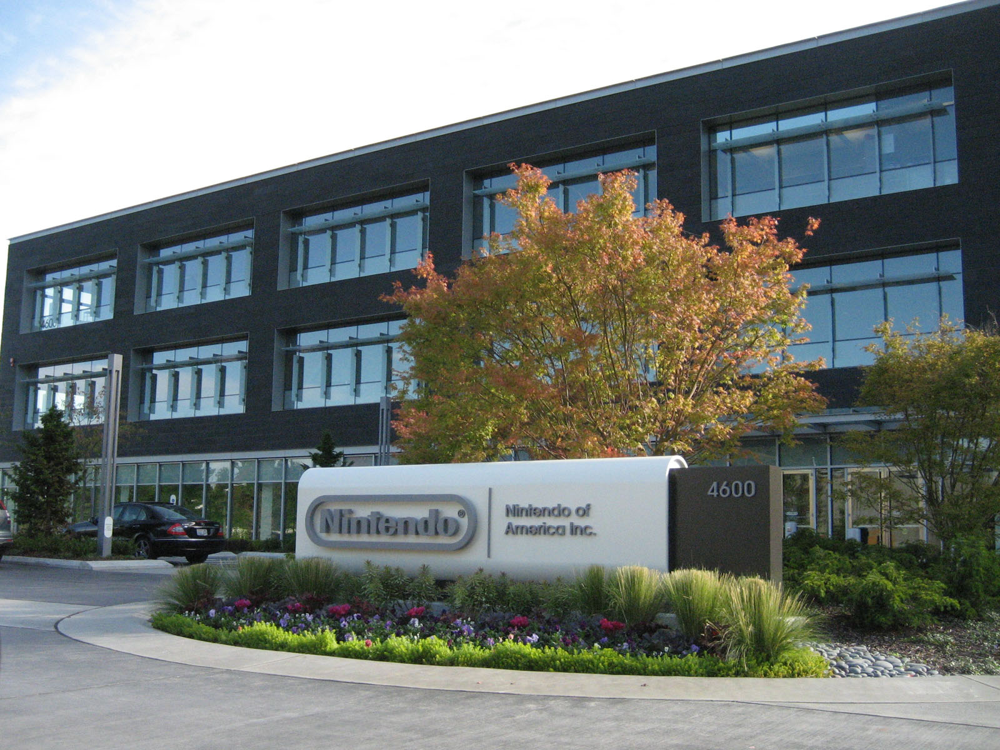

History of Nintendo
NINTENDO TODAY
Nintendo is considered one of the biggest leaders of technology and video games right now. Nintendo has always been very well known and respected but they haven't always been so big. Before pioneering the world of gaming and bringing joy to the masses, Nintendo was but a small company with no attachment to video games at all.
HUMBLE BEGINNINGS
1889-1965
Originally founded as Yamanouchi Nintendo (山内任天堂) by Fusajiro Yamauchi on September 23, 1889, Nintendo was simply a card company. It did well for what it was, getting business done with Disney and even some American card companies.
CARD COMPANY TURNED TOY COMPANY
1966-1972
Nintendo then transitioned into a toy company, competing with Bandai and Tomy. That seemed to be a bad decision and was hard to compete. The toys they made were mostly electronic toys, like a light gun for the TV.
.jpg)
STRUGGLING WITH THE TOY BUSINESS
1966-1972
There were many problems that Nintendo ran into when trying to become a toy business. Between the tough competition and the need to having to constantly make new toys, Nintendo decided to look into other media.
.jpg)
THE DELVE INTO VIDEO GAMES
1972
Since Nintendo had worked on toys, they decided to help with the involvement of the Magnavox Odyssey. This was a huge step forward for Nintendo and led to the powerhouse of technology they'd eventually become.
.jpg)
HOME CONSOLE SUCCESS
1983
There was a large video game crash of 1983 and Nintendo basically single- handedly revived the home console market. They promised to only release games with their 'seal of approval' and made a market for home console games again. The NES was a huge hit everywhere, worldwide.
.jpg)
THE LEAP INTO 3D
1996
Nintendo had been the king of video game until they started to get serious competition. One of their first 'real' competition was Sony. They had put out the Playstation and that was revoluntionary for the time. But Nintendo fought back with the 'Nintendo 64'.
.jpg)
INNOVATION OF TECHNOLOGY
2006
After years of fighting in the 3D era, Nintendo decided to mix things up with their newest console, the Wii. This was the first motion controlled console with this much quality. This turned out to be a good idea by Nintendo, as the Wii became one of the best selling consoles of all time.
.jpg)
THE JUMP TO HD, TO NOW
2012-NOW
After the success of the Wii, Nintendo decided to ride off of that success as much as possible. They made a successor of the Wii, the Wii U. This turned out to be a big failure and Nintendo knew that. So, they decided to do something completely different with their, as of now. latest consol. The Nintendo Switch is a hybrid console that has been just as, if not more, successful as the Wii.